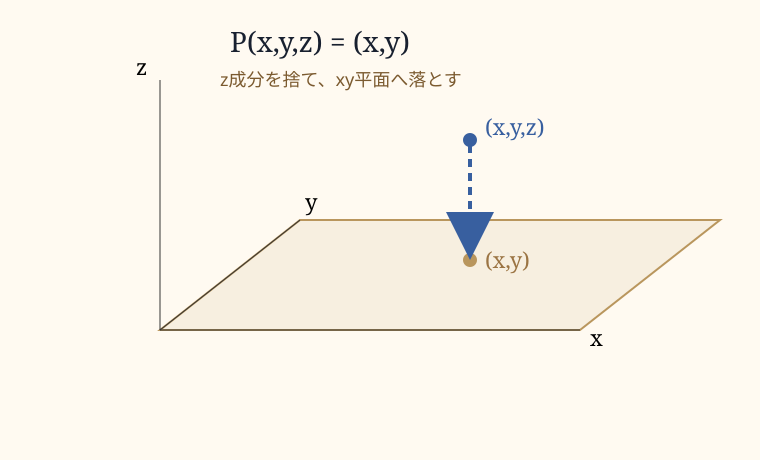
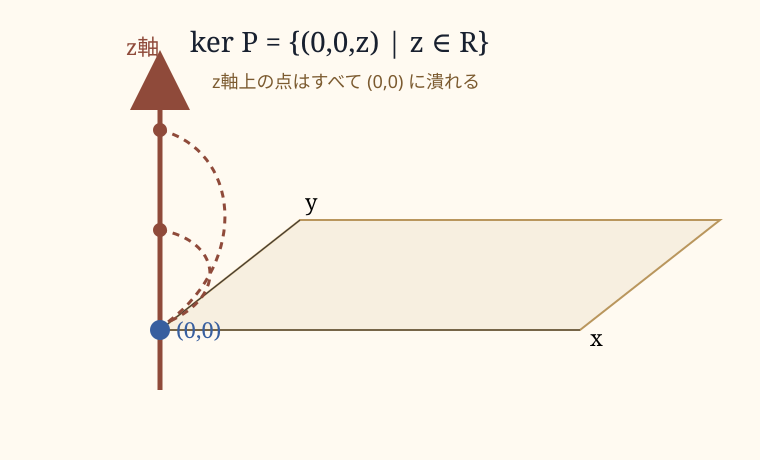

0. このページの位置づけ
このページでは、線形写像における像・逆像・核・階数・退化次数を扱う。
前のページでは、逆行列を「元に戻せる変換」として見た。しかし、すべての変換が戻せるわけではない。むしろ、重要なのは戻せない変換で何が起きているかである。
戻せない変換では、異なる入力が同じ出力へ潰れる。そのとき、何が出力側に残り、何が入力側で失われるのか。この構造を記述するのが、像と核である。
1. 像とは何か
写像 \(A:V\to W\) があり、ベクトル \(\mathbf v\in V\) が与えられているとする。このとき、\(\mathbf v\) が写像 \(A\) によって送られた先、すなわち
を、\(\mathbf v\) の像という。
この意味で、像とは単なる「結果」ではない。像とは、写像によって構造的に生じた出力である。
ここで「単なる結果ではない」とは、ただ計算して出てきた値を孤立して見るのではなく、その値がどのような入力空間の関係から生まれたのかまで含めて見る、という意味である。たとえば、入力側で二つのベクトルを足したもの、あるベクトルを2倍したもの、ある直線上に並んでいる点たちは、線形写像を通ったあとも、それぞれ対応する形で出力側へ現れる。
つまり像は、ばらばらの点の集まりではない。入力空間にあった「足し算」「倍率」「直線」「平面」「部分空間」といった関係が、写像を通って出力側に現れた姿である。
たとえば、\(\mathbf v\) と \(\mathbf w\) から作った線形結合
を写すと、線形写像では
になる。これは、入力側で作った関係が、出力側でも対応する関係として残るということである。
像とは、写像を通って出てきた点の集まりであると同時に、入力側の線形な関係が出力側にどう現れたかを示す構造でもある。
さらに、ひとつのベクトルの像だけでなく、写像 \(A\) が到達しうる出力全体も像と呼ばれる。これは \(A\) の像、あるいは像空間と呼ばれる。
たとえば、\(A:\mathbb R^3\to\mathbb R^2\) が三次元ベクトルを二次元ベクトルへ送るなら、\(\operatorname{Im}A\) は、三次元空間の点たちが写された先としての二次元側の集合である。
像とは、入力空間そのものではない。しかし、入力空間と無関係なものでもない。像とは、ある写像を通って現れた、変換後の姿である。
2. 逆像は一点ではなく集合になる
像を見るとき、私たちはしばしば、その像がどこから来たのかを考える。数学的には、これは逆像の問題である。
写像 \(A:V\to W\) と、出力側の点 \(\mathbf q\in W\) が与えられたとき、
を満たす入力 \(\mathbf p\in V\) の集合を、\(\mathbf q\) の逆像という。正確には、
である。
ここで注意が必要である。記号 \(A^{-1}\) は、必ずしも逆行列を意味しない。逆行列が存在しない場合でも、ある出力に対して「それに写る入力全体」を考えることはできる。これが逆像である。
もし \(A\) が正則行列で、逆行列 \(A^{-1}\) を持つなら、任意の \(\mathbf q\) に対して入力は一意に決まる。
しかし、逆像は常に一点とは限らない。
簡単な例として、次の関数を考える。
このとき、
である。したがって、\(4\) の逆像は一点ではなく、
である。
同じ像に、複数の入力が対応している。この時点で、像から逆像を復元することは、すでに一意ではなくなる。
線形変換でも同じことが起きる。とくに、次元を潰す写像では、異なる入力が同じ出力へ重なる。像はある。しかし、その像がどこから来たのかは、一点には決まらない。
3. 核とは何か
核とは、写像によってゼロへ潰される入力全体である。
線形写像 \(A:V\to W\) について、
を \(A\) の核という。
核は、その写像によって失われる方向を表している。
核とは、「この方向に違っていても、写像後には違いとして見えなくなる」方向の集まりである。
逆行列が存在する変換では、核はゼロベクトルだけになる。
これは、ゼロ以外に潰れる方向がないということである。つまり、異なる入力が同じ出力へ重ならない。
逆に、ゼロ以外のベクトルが核に入っているなら、その方向の差は出力側で消える。すると変換は一意には戻せない。
4. 射影 P(x,y,z)=(x,y)
三次元空間を二次元平面へ写す写像を考える。もっとも基本的な例は、

である。
これは、三次元ベクトルのうち \(z\) 成分を捨て、\(x,y\) 成分だけを残す写像である。行列で書けば、
であり、
となる。
このとき、
はすべて同じ
に写る。
つまり、三次元空間内では異なる点だったものが、二次元平面上では同じ点として扱われる。
これが、次元が落ちるということの基本形である。次元が落ちるとは、単に「立体が平面に見える」ということではない。複数の入力が、同じ出力へ同一化されることである。
この同一化を、核によって記述できる。

これは、\(P\) によってゼロへ潰される方向である。\(z\) 軸方向の差は、投影後には見えない。
5. 同じ像へ潰れる点たち
先ほどの写像
では、出力 \((x,y)\) を見ても、もとの \(z\) 成分は分からない。
つまり、ひとつの二次元点 \((x,y)\) の背後には、無数の三次元点がある。逆像は一点ではなく、一本の直線になる。
このとき失われているのは、\(z\) 方向の情報である。
だが、情報喪失とは「すべてが分からなくなる」ことではない。失われるものがある一方で、残るものもある。
\(P(x,y,z)=(x,y)\) では、\(z\) 成分は失われる。しかし、\(x\) と \(y\) の情報は残る。平面上の配置、左右上下の関係、ある種の距離、境界、並び、交差、接続関係は残る。
情報喪失とは、単なる欠落ではない。それは、ある差異が見えなくなり、別の差異は残るという、構造的な選別である。
線形写像 \(A\) について、二つの入力 \(\mathbf u,\mathbf v\) が同じ像を持つ条件は、
である。これは
と同値である。つまり、
である。
同じ像へ潰れる二つの点の差は、核に属している。
ここに、情報喪失の正確な形がある。失われた情報とは、核の方向の差異である。
6. 2行3列・1行3列の写像
写像の行列の形を見ると、入力側の次元と出力側の次元が分かる。
たとえば、2行3列の行列は、三次元ベクトルを二次元ベクトルへ送る。
これは、先ほどの射影 \(P(x,y,z)=(x,y)\) である。この写像では、\(z\) 方向が潰れる。像は二次元平面全体で、核はz軸である。
一方、1行3列の行列は、三次元ベクトルを一次元の数へ送る。
この写像は、
である。出力として残るのは \(x\) 成分だけであり、\(y,z\) 方向の違いは失われる。
このとき、核は
になる。これは \(yz\) 平面である。
つまり、1行3列の写像では、核が平面になることがある。三次元のうち、二つの方向が出力側で見えなくなるからである。
このように、どの成分・どの方向が潰れるかは、行列の形と階数によって決まる。
7. ゼロ写像
もっとも極端な例が、ゼロ写像である。
ゼロ写像 \(Z:V\to W\) は、すべての入力をゼロへ送る。
このとき、像はゼロだけである。
像の次元は0である。出力側には広がりが残っていない。
一方、核は入力空間全体である。
なぜなら、すべての入力がゼロへ写るからである。
つまり、ゼロ写像では、入力側のすべての方向が潰れる。出力側から見ると、どの入力も同じゼロに見える。
このとき、ゼロの逆像は入力空間全体である。
逆に、ゼロ以外の出力に対する逆像は空集合である。
ゼロ写像は、「全部失われる」とはどういうことかを見るための極端なモデルである。
像は0次元に潰れ、核は入力空間全体になる。
8. 階数・退化次数・階数退化次数定理
階数とは、像の次元である。
つまり、写像後に出力側へどれだけの広がりが残っているかを表す。
退化次数とは、核の次元である。
つまり、入力側でどれだけの方向がゼロへ潰れているかを表す。
有限次元ベクトル空間では、次の関係が成り立つ。
これは階数退化次数定理である。
入力空間の次元は、像として残る次元と、核として潰れる次元に分かれる。
三次元から二次元への射影 \(P(x,y,z)=(x,y)\) では、入力空間の次元は3である。像は二次元、核はz軸なので一次元である。
三次元から一次元へ \(B(x,y,z)=x\) と写す場合、像は一次元、核は \(yz\) 平面なので二次元である。
ゼロ写像 \(Z:V\to W\) では、像は0次元、核は \(V\) 全体である。
この定理は、単なる次元の帳尻合わせではない。何が出力側に残り、何が入力側で潰れるのかを、次元として正確に分けている。
9. 何が残り、何が失われるのか
線形変換を考えるとき、もっとも重要なのは、何が変わるかだけではない。何が変わらないかである。
一般の線形写像は、長さや角度を必ずしも保たない。面積や体積も保つとは限らない。直交性も保たないことがある。
しかし、すべての線形写像は、線形結合の構造を保つ。
これは、\(\mathbf u\) と \(\mathbf v\) から作られる関係が、写像後にも対応する形で残るということである。
また、線形写像は部分空間を部分空間へ送る。直線は、点に潰れる場合を除けば直線へ写る。平面は、平面・直線・点のいずれかへ写る。
すべてが保存されるわけではない。しかし、すべてが壊れるわけでもない。
次元落ちとは、世界が曖昧に見えることではない。どの方向が残り、どの方向が潰れるのかが、写像によって厳密に決まっているということである。
情報喪失とは、単なる欠落ではない。それは、ある差異が見えなくなり、別の差異は残るという、構造的な選別である。
10. 次に進むこと
ここまでで、像・逆像・核・階数・退化次数を整理した。これにより、次元が落ちる変換で何が失われ、何が残るのかが見えるようになる。
この先は、接続ノート「像から逆像へ」で、線形写像から写真・絵画・遠近法・観測・候補逆像へ進む。また、線形代数の本筋としては、固有値・固有ベクトルへ進むことができる。